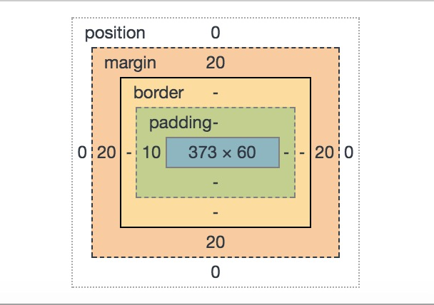

盒子模型定义
在一个文档中，每个 元素 都被表示为一个 矩形的盒子 确定这些盒子的尺寸，属性（比如颜色，背景，边框），和位置是渲染引擎的目标。 使用标准盒模型描述这些矩形盒子中的每一个，这个模型描述了元素所占的内容。每个盒子有4个边： content ，padding ，border ，margin
盒模型分类
盒子模型分为 IE盒模型和W3C标准盒模型
IE盒模型和W3C标准盒模型的区别
w3c标准：属性width和height只包含content，不包含border和padding
IE盒标准：属性width和height包含border和padding，指的是content+border+padding
ie8+可以使用box-sizing来选择是选用IE盒模型还是W3C模型,box-sizing默认是content-box(w3c标准)，可以使用border-box来选择IE盒模型
用公式来表达
content-box（标准盒模型） width = contentWidth height = contentHeight border-box（IE盒模型） width = border + padding + contentWidth height = border + padding + contentHeight